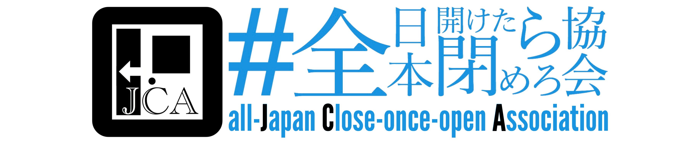

Airoku
藍碌
Airoku
藍碌
開けたら閉めろ！
空調設備は現代科学技術の粋である．我々はこの技術を最大限利用すべく，冷房中・暖房中の部屋の締切を徹底せねばならない．
何らかの方法で自分が全日本開けたら閉めろ協会員であることを表明してください．
ちょっと馬鹿っぽいくらいが単純明快で良いのではないかと思い，この訳を採用しました．文法的に正しい表現だと，close when you find opened door or something like thatとかだと思います．
Since 2018
全日本開けたら閉めろ協会 all-Japan Close-once-open Association